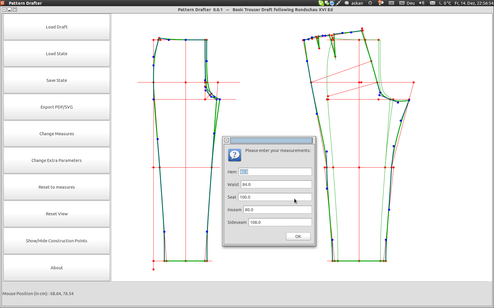

Simple Program to draw Pattern from Drafting Instructions
PatternDrafter helps you to create custom patterns from drafting instructions.
It is intended for individual tailors and homesewers to speed up the drafting process. It is based on pattern drafts from classic tailoring like this Rundschau Trouser Draft, which is also included as a sample script.
I wanted to bring the classic way of drawing a pattern into the computer without sacrificing flexibility. The draft is therefore highly editable, without leaving it's boundaries.
It might also help in a deeper understanding of a draft, as you can easily see, which parameters alter the pattern in what way.
I myself am currently only starting tailoring, so I might not have thought of important points. This is why I call this currently a version 0.0.1 and would be happy to get input from you. But as I also have a fulltime job, I cannot promise anything.
Please feel free to contact me, if you have questions or suggestions: julius.schulz(ät)fu-berlin.de
Pattern Drafter is written in Python and therefore requires a Python 2.x interpreter. Furthermore, you will need the following libraries:
If those libraries are installed, only patter.py, pattern_widget.py and pattern_draw.py from the repository are required. You also require the pattern drafting instructions. Currently there is only a basic trouser draft based on Rundschau XVI Ed. Therefore, you should also have the trouser_script file.
I have only tested this on a fairly old Ubuntu version, but I will try to help you, if it doesn't work on your machine.
You can use the zip and tar balls provided on the page's top. They should include everything.
The program can be launched from the commandline via
python pattern_draw.py
The main screen consists of the pattern canvas, the buttons and a statusbar.

You can pan the canvas by clicking on an empty part and drag. You can also zoom in with the scrollwheel of your mouse.
If you want to print the obviously very large output, it may be advisable to tile into smaller pages, that fit your printer.
Software like Adobe AcrobatReader or Adobe Illustrator provide such options in their printing dialogue.
If you are using Linux, the pdfposter package is an option:
pdfposter -mA4 -s1 draft.pdf tiled.pdf
In the following I will use some lines from the example script to explain the draft macro language. Please refer to this file to get a better understanding.
name Basic Trouser Draft following Rundschau XVI Ed
This will set the pattern name as shown in the program window's title.
measure side_seam Sideseam 108
This introduces a measurement variable "side_seam". The name in the Measurements window is "Sideseam" and the default value is 108.
The script per se is unit-ignorant and you could choose any you like, however the pdf-exporter assumes the unit to be cm. This can easily be altered however.
extrapar b1_move is (1./sqrt(5), 2./sqrt(5))
extrapar hem_corr is 1.
With the extrapar command you can create some extra parameters, you might use later in your script. These are editable in an extra dialogue in the program. In the first case it is called "b1_move" and is a vector with the two elements 1/sqrt(5) and 2/sqrt(5). In the second case it is called "hem_corr" and simply represents the value 1.
start FrontTrouser
With the start command a new pattern part is started, in this case the front trouser. (Must be a single word)
sheet BackTrouser add a b M2
Adds the points and/or lines after add to current pattern part, otherwise no points from a previous sheet will be shown on the new part, after "start" was evoked. You can use this, if eg you want some of the construction points and lines of the front trouser to also show up in the back trouser.
sheet BackTrouser show front_outseam front_inseam_left front_topseam
Show the given cutlines also in the given pattern piece (BackTrouser) as reference guidelines. They will not be shown, if you switch off the construction lines.
point L is (0.,0.)
point b1_prime is b1.p
Sets a point to a specific value. This can be either a given value or be based on an already existing point, in this case you have to put ".p" to the point's name. This point will be fully moveable.
point G1 on G_line from g distance seat/2./10.+G1_corr
point M on G_line from G distance dist(G,G1)/2.
Creates a point (eg G1) on a line (eg G_line) with a certain distance from another point on (!) that line (eg g). You can also use the "dist" command to measure the distance between two points. This point may only be moved on that line.
point M1 intersect M_line B_line
Create a point by intersecting two lines. This point cannot be moved.
point B5 from M3 on S6_B5 distance min dist(B4,M3)
With this command a point can be created on a line (S6_B5) that is a certain distance away from another point not on the line (M3). As this is the intersection of a circle with a line, there are usually two possible intersections, you might have to change min to max. Please note the different order to the above creation of a point on a line, where the other point lies on the line. This point can be moved along the given line.
move M2 3*right
This moves the point M2 3cm to the right. Other available directions are left, up and down. Directions can also be obtained from lines by adding ".u" to the line's name. Furthermore the "norm()" function exists, which creates a direction perpendicular to this direction.
Lines themselves are not moveable, but their founding points may and such moves the line.
line LB from L up
Creates a line named LB from the point L in the direction upwards. As given before, other choices include: right, left, down and custom values.
line ac_G from ac to G
Creates a straight line ac_G from point ac to G.
line nr_line normal nr n_line
Creates a line perpendicular to n_line through the point n.
cutline front_outseam G outseam_control_3 outseam_control_4 b1_prime
cutline front_inseam_right K2 S2
Cut lines are either Beziér Lines, if you give four points or straight lines, if two points are given.
If you invoke the cutline command a second time with the same name, the line is continued with the given points.
The program is released under GPL v3. This does not hold for the drafting scripts, they are due to their original sources terms.